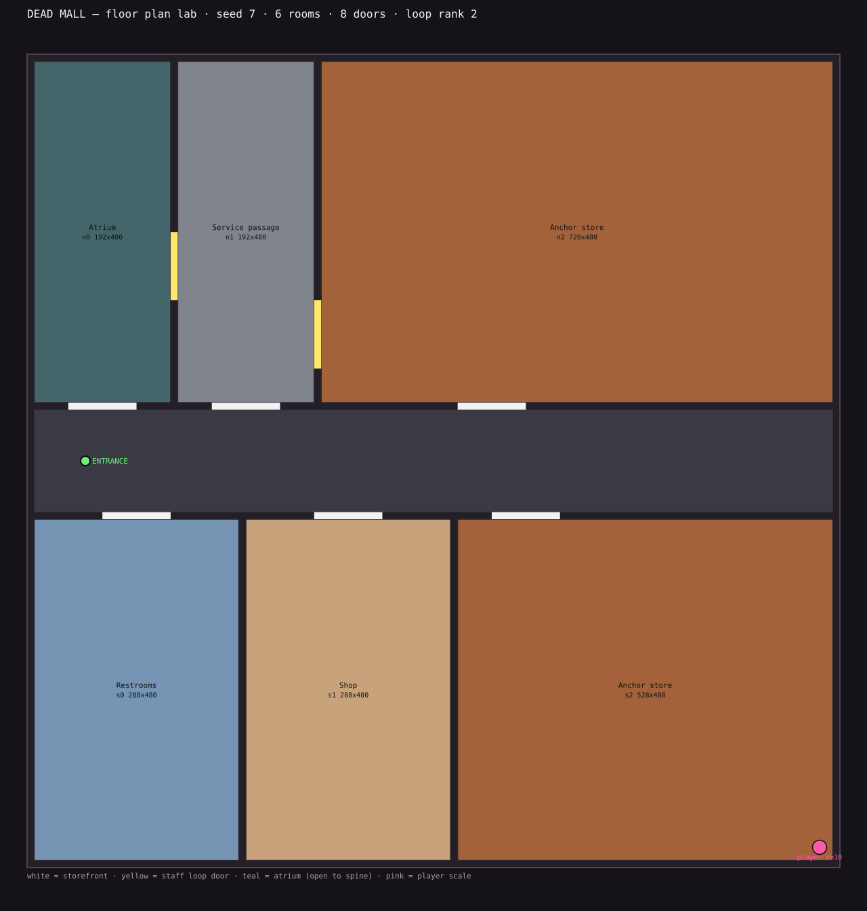
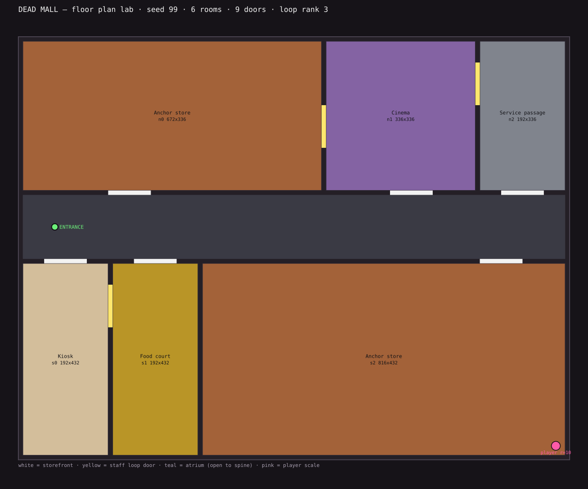
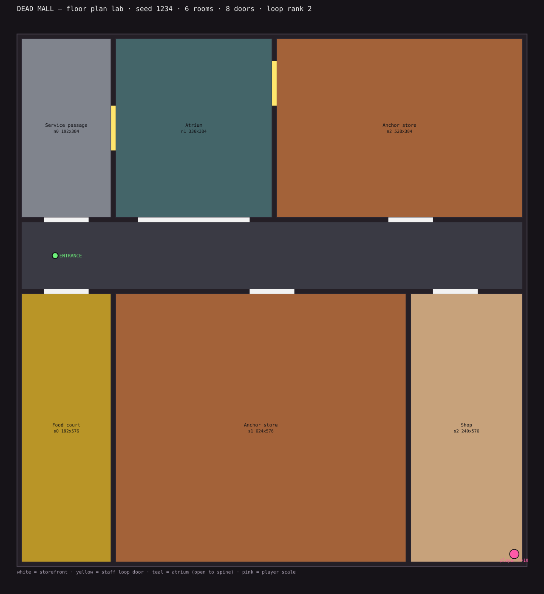
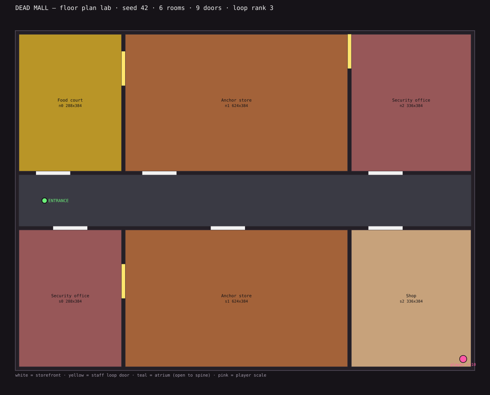

seed 7: 6 rooms, 8 doors, cycle rank 2 room widths 192..720 units (4 distinct) areas 92160..345600 units^2 (broadest / narrowest = 3.75x) roles: atrium, service, anchor, restroom, shop

seed 99: 6 rooms, 9 doors, cycle rank 3 room widths 192..816 units (4 distinct) areas 64512..352512 units^2 (broadest / narrowest = 4.25x) roles: anchor, cinema, service, kiosk, food_court

seed 1234: 6 rooms, 8 doors, cycle rank 2 room widths 192..624 units (5 distinct) areas 73728..359424 units^2 (broadest / narrowest = 3.25x) roles: service, atrium, anchor, food_court, shop

seed 42: 6 rooms, 9 doors, cycle rank 3 room widths 288..624 units (3 distinct) areas 110592..239616 units^2 (broadest / narrowest = 2.17x) roles: food_court, anchor, security, shop